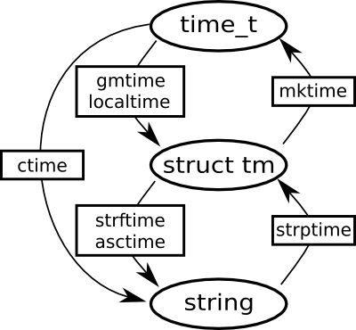
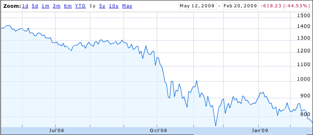
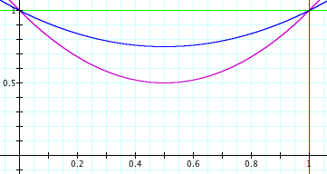
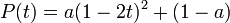
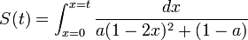
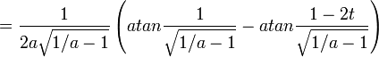
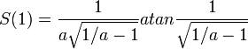
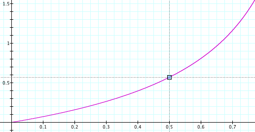
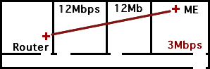
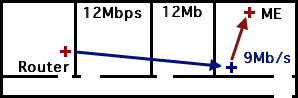

02.24.09
Posted in programming at 10:04 pm by danvk
Here’s a handy chart of the C Standard Library functions in time.h:

The ovals are data types and the rectangles are functions. The three basic types are:
- time_t: number of seconds since the start of the UNIX epoch. This is always UTC!
- struct tm: A broken-down date, split into years, months, seconds, etc. In Python, it’s a tuple.
- string: Any string representation of a time, e.g. “Wed Jun 30 21:49:08 1993″.
Generally you either want a time_t (because it’s easy to do arithmetic with) or a string (because it’s pretty to look at). So to get from a time_t to a string, you should use something like strftime("%Y-%m-%d", localtime(time())). To go the other way, you’d use mktime(strptime(str, "%Y-%m-%d")).
This library has been around since at least 1982. It’s been replicated in many other languages (Python, Perl, Ruby). We seem to be stuck with it.
Read on for my rant about why this is all idiotic.
Read the rest of this entry »
Permalink
02.22.09
Posted in finance, math at 2:51 pm by danvk
The S&P 500 certainly hasn’t made anyone rich over the last year:

Most people see this and think “an investment one year ago would have lost 45% of its value”. Others think “great, now stocks are all cheaper!”
In reality, most ordinary people invest portions of their paychecks, either through their 401(k) or a personal account. This means they’re doing time averaging. Sure, investments when the market was up aren’t doing well. But investments when the market was down are doing just fine.
This is all kind of wishy-washy, though. Let’s try to quantify it. Suppose a market drop and recovery looks like a parabola:

The prices here are parabolas

for various values of a. a=0 means the market is flat. a=0.5 means the market loses 50% of its value.
If you invest dt dollars in this market at each point in time, you can work out a nasty integral and show that the number of shares you have at time t is:


and hence the value of your shares at the end is:

Here’s what that looks like:

The x-axis is a, the fraction by which the market drops. The y-axis is your total return on investment. If the market drops by 50% (a=0.5) then your total return on investment is around 55%. With time-averaging, the more the market drops, the better you do.
This makes a lot of sense if you think about it. Say the market drops 99.9% and then recovers. The shares you bought when it was at its bottom earned you a return of 1000x. Investing at the bottom is important! You should keep investing, even as the market drops. If you don’t, you’ll miss that bottom.
Permalink
02.19.09
Posted in boggle at 1:09 am by danvk
Don’t let the sixteen month hiatus fool you. There’s just no end to Boggle posts on danvk.org!
In case you’d forgot, we’ve developed a blazing fast boggle solver capable of scoring 10,000 Boggle boards a second. What to do with this? Other than some interesting analyses, the most interesting question is:
What is the highest-scoring Boggle Board?
In this post, we’ll try to answer that question using Simulated Annealing. Here’s a sneak peak at one of the exceptionally word-rich boards we’ll find:
Follow me past the fold for more…
Read the rest of this entry »
Permalink
02.16.09
Posted in web at 5:23 pm by danvk
Has anyone else noticed Twitter being mentioned in the news more and more the last few weeks?
These have all happened in the last month:
All this makes me think I should hop on the bandwagon. I just created an account. I’m danvdk.
Permalink
02.13.09
Posted in personal at 11:27 am by danvk
I recently purchased and installed a Belkin F5D7132 Wireless Repeater. It was $37 on Amazon, about half to a third the price of most other options. Most reviews along the lines of this one: “Hard to configure, a charm once [it's] done”. I thought I’d share my experiences, in case they’re helpful to anyone.
Here’s the basic layout of my apartment:

The wireless router is in the living room, and all the bedrooms come off a long hallway. My bedroom is the farthest from the living room. Somewhere between the middle bedroom and my bedroom, the throughput falls off a cliff. (I measured this using the Speakeasy Internet Speed Test)
My plan was to install the repeater somewhere in the middle bedroom, just before the performance cliff.
Installation
I followed the instructions on this Amazon review, rather than those in the instruction booklet. You’ll need a Windows machine to set the thing up, nothing else will do. The basic trick is to make sure that you’re plugged directly into the repeater via Ethernet when you run the setup utility, and that you’re on the same subnet. Its default IP is 192.168.2.254. This is pretty unusual, so it’s not going to “just work”.
After the subnet business, the most annoying part of the install was the ethernet cable that Belkin included with the Repeater. It kept slipping out of my laptop. Most of the problems I had were solved by shoving the ethernet jack back in place.
Once I got into the web interface, there were a few more hiccups. The first time I set its parent network and network name, it rebooted the router. When it came back, only the parent network had been set. But after one more change and reboot, everything was working fine.
Security: I chose the WPA-PSK, but had to switch from TKIP (the default) to AES to get it to work with my Macbook.
I also gave the Repeater a different SSID (network name) than the main wireless router. This made testing it much simpler, since I knew which one I was connected to.
Placing the Repeater
The absolute key for this was AP Grapher, a Mac OS X application that plots wireless strength over time. I would place the repeater, then watch the signal strength plummet as I walked around the corner, into the hallway and into my room. After experimenting with a few locations, I realized that:
- The Repeater’s antenna is much better than my laptop’s.
- The Repeater’s antenna is much worse than the main router’s.
As soon as there was even a single wall between my laptop and the repeater, its signal strength was indistinguishable from the main router’s. So here’s the configuration I wound up using:

This is not at all how I’d expected my setup to look, but you can’t argue with results! Here are the details:
| |
Before |
After |
| Signal (db) |
-55 |
-36* |
| Noise (db) |
-95 |
-96 |
| Downlink (KB/s) |
378.9 |
853.8 |
| Uplink (KB/s) |
342.1 |
692.3 |
The uplink/downlink stats are the most impressive. The “Signal” stat is misleading, since it’s only half the story. There are two wireless connections (Router to Repeater, Repeater to Laptop) and this only represents the strength of the latter.
When it’s all said and done, $37 for a 2.5x wireless speedup made the Belkin F5D7132 a great investment!
Permalink